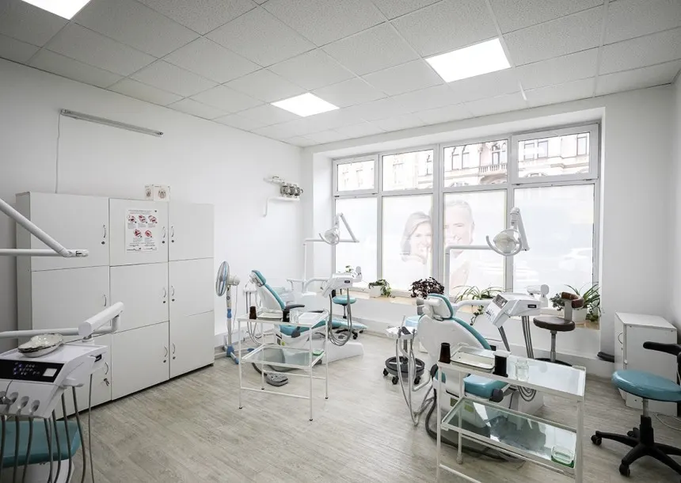

Для пільгових категорій жителів Львівської територіальної громади
Міська програма зубопротезування
- Зубопротезування
- Лікувально-хірургічна підготовка до протезування
Лікування за міською програмою, допомога військовим і ветеранам, робота з НСЗУ — в одному місці.
Для пільгових категорій жителів Львівської територіальної громади
Для військовослужбовців, ветеранів і ветеранок, учасників бойових дій
Для всіх пацієнтів
Ціни відкриті. Це вибрані позиції прейскуранту — решту скаже реєстратура.
Діагностика і лікування захворювань зубів та ротової порожнини, профілактика.
Видалення зубів, лікування запальних процесів, імплантація.
Усі види протезування: знімне, незнімне, комбіноване, мікропротезування.
Цифрова рентгенографія і 3D-томографія щелепно-лицевої ділянки: висока інформативність, низький рівень опромінення, чіткий знімок.
Уточнити вартість у реєстратуріДитячий прийом — з окремими цінами нижче. Також проводимо ортодонтичне лікування зубощелепних аномалій.
Повний прейскурант (Розділ у розробці)Запис — у реєстратурі: за телефоном або особисто.
Заповнюють медичну карту і видають талон на прийом до лікаря потрібної спеціальності.
Лікар оглядає, визначає обсяг допомоги, за потреби скеровує на додаткове обстеження.
Після діагнозу і погодження плану лікар проводить усі потрібні маніпуляції.
Дату і час повідомляють. Перед кожним візитом — талон у реєстратурі.
Після завершення лікування — поради щодо догляду за ротовою порожниною.
Перед кожним відвідуванням потрібен талон на прийом у реєстратурі. Які документи потрібні для платного прийому, уточнюйте в реєстратурі.
Оригінали документів:
Оригінали документів:
Пацієнти з особливими потребами, зокрема діти, обслуговуються позачергово за попереднім записом у реєстратурі.

Дороги сходяться тут: запис — у реєстратурі за телефоном або особисто.
Пн–Пт 08:00–20:00 · Сб–Нд 09:00–16:00